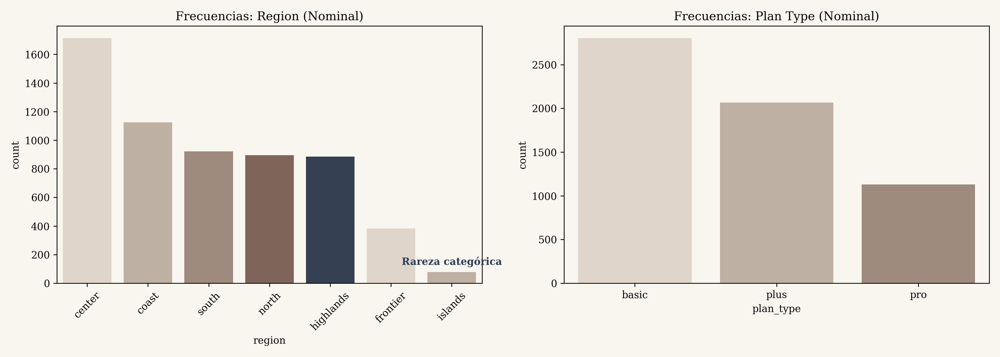
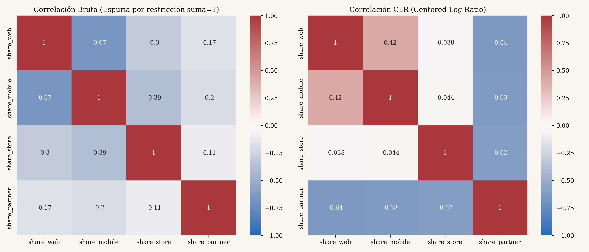
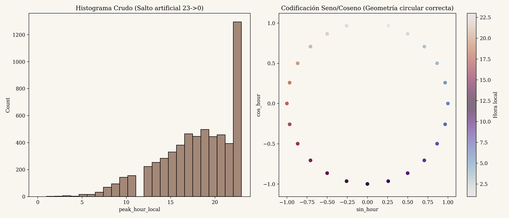
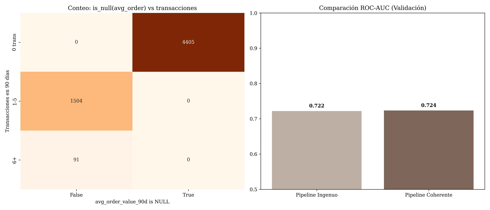

Imagina que eres el dueño de una tienda. Tienes una lista enorme (10,090 filas) de todos los clientes que han pasado por tu negocio. Tienes datos sobre su edad, cuánto han comprado, desde qué canal llegaron (web, móvil) y a qué hora suelen comprar.
El Objetivo del Trabajo: Tu profesor quiere que construyas un modelo predictivo (una bola de cristal estadística) para responder a una sola pregunta: ¿Este cliente específico va a gastar dinero en los próximos 60 días? Sí o No.
Pero el profesor puso una trampa (la Pregunta Rectora del trabajo). La trampa es ver si le vas a entregar la información a la "bola de cristal" a lo bruto (Pipeline Ingenuo), o si vas a ser inteligente y vas a darle la información explicándole qué significa cada número (Pipeline Coherente).
Si te pones nervioso y olvidas un término técnico, aquí está la traducción mental que debes hacer:
spend_positive. Es 1 si el cliente gastó dinero, 0 si no gastó.post_window_retention_call y post_window_discount ocurren en el futuro. Si el modelo las ve, saca 100% de nota, pero en la vida real no serviría para nada. Las tuvimos que eliminar desde el inicio.A veces faltan datos en nuestra tabla. Aparece un feo NaN o "Nulo". Pero no todos los nulos significan lo mismo. Si te preguntan por los "Mecanismos de Faltantes", debes responder con esta analogía médica de 4 niveles:
Analogía: El tubo de sangre se cayó al piso por accidente. Faltó el dato por pura mala suerte. (Variable promo_open_rate_90d). Se puede rellenar con la media.
Analogía: A los abuelos se les olvida llenar la casilla "Tipo de Sangre" porque no ven bien. El dato falta, pero la culpa la tiene su edad (otra variable de la tabla). (Variable education_level). Podemos adivinarlo mirando otras variables.
Analogía: Gente de +120 kilos no responde la pregunta de su peso. ¡El dato falta JUSTAMENTE por el valor que falta! (Variable satisfaction_score: Los clientes más furiosos no contestan encuestas). Rellenarlo con el promedio ("cliente feliz") es un error gravísimo. Hay que añadir una bandera de advertencia.
Analogía: Le preguntas a un calvo "qué marca de champú usa". La respuesta es "No Aplica". (Variable avg_order_value_90d). Un cliente con cero compras no puede tener "promedio de compras". Se rellena con cero y bandera binaria.
Esta es la carnita del trabajo. Tienes que convencer al profesor de que no puedes tratar a todos los números igual.
Nuestra variable peak_hour_local va de 0 a 23 horas.
El error: Meterle el número de 0 a 23 al computador. Si un cliente compra a las 23:00 y otro compra a las 00:00, en la vida real solo hay una hora de diferencia. Pero en matemáticas de colegio, 23 y 0 están a 23 números de distancia. El modelo pensará que son clientes opuestos.
La solución: Seno y Coseno. Coges la línea de tiempo y la doblas formando un reloj circular. Así, la hora 23 y la hora 0 quedan una al lado de la otra.
Esta es la parte más avanzada. Tienes 4 canales de venta que suman el 100% de las compras de un cliente (web + app + partner + tienda = 1). Esto se llama una restricción Simplex.
El error: Como suman 1, si un cliente usa un 90% la Web, obligatoriamente tiene que usar menos los otros canales para que la suma no pase de 100. Esto hace que el modelo crea que hay una "Correlación Negativa" (si uno sube, el otro baja). Pero no es un comportamiento del cliente, ¡es una ilusión matemática!
La solución: CLR (Centered Log Ratio). Usamos un logaritmo loco que destruye esa regla del "100%", liberando a los números para que el modelo pueda analizarlos sin ataduras geométricas.
Para probar todo lo anterior, construimos dos fábricas (pipelines) en Python y pasamos los mismos datos por ambas.
| Característica | Pipeline Ingenuo (Lo Incorrecto) | Pipeline Coherente (Tu Trabajo) |
|---|---|---|
| Categorías (Región) | Label Encoding (Números 1, 2, 3...) | One-Hot Encoding (Indicadores 1 o 0) |
| Canales (Shares) | Se metieron crudos, engañando al modelo | Se transformaron con CLR |
| La hora del día | Se dejó como número lineal (0 al 23) | Se dobló en un círculo con Seno y Coseno |
| Faltantes (NaN) | Se rellenó TODO con el promedio. | Se usaron modelos predictivos para MAR, y ceros con banderas para los Estructurales. |
La métrica que más le importa a tu profesor es el ROC-AUC (Área Bajo la Curva de la Característica Operativa del Receptor).
¿Qué rayos es el ROC-AUC en español?
Imagina que el modelo hace una lista de clientes ordenados del que más probabilidad tiene de comprar al que menos. El ROC-AUC califica qué tan perfecto es ese ordenamiento.
Durante tu sustentación, puedes usar el "Centro de Mando" de tus diapositivas para abrir los archivos crudos generados. Aquí te explico exactamente qué muestra cada uno para que los defiendas con propiedad.
Qué es: Un archivo CSV (`salidas_W4/Tabla_W4.1.csv`) que clasifica cada variable.
Para qué sirve: Demuestra que revisaste cada variable a mano. Muestra si una variable es "Continua", "Nominal", "Ordinal" o "Cíclica". Si el profesor pregunta "¿Cómo sabías que peak_hour era cíclica?", le muestras esta tabla; fue tu plano de arquitectura inicial.
Qué es: Un CSV (`salidas_W4/Tabla_W4.2.csv`) que reporta el porcentaje exacto de nulos (NaN) en cada columna y su diagnóstico.
Para qué sirve: Aquí es donde documentaste si un nulo era MCAR, MAR, MNAR o Estructural. Es tu defensa empírica antes de imputar a lo loco.

Explicación: Muestra barras de conteo para variables de texto (ej. región). Sirve para identificar si hay categorías "raras" o muy pequeñas que el modelo podría ignorar. Con base en esto se decide usar One-Hot Encoding.

Explicación: Muestra dos mapas de calor. El de la izquierda muestra los "shares" (porcentajes) crudos llenos de correlaciones rojas oscuras falsas (porque todos suman 100%). El de la derecha muestra los datos transformados por el logaritmo CLR, donde la restricción desaparece y el modelo puede ver las relaciones reales y limpias.

Explicación: A la izquierda, un histograma plano engañoso (línea recta de 0 a 23). A la derecha, el círculo trigonométrico (Seno y Coseno) que le entregas al "Pipeline Coherente" para que entienda que la hora 23 y la 0 son vecinas.

Explicación: La gráfica que te hace ganar la materia. Muestra la distribución del valor promedio de compra (avg_order_value_90d). En la barra roja gigante separada a la izquierda, demostramos que todos los "Nulos" coinciden perfectamente con los clientes que tienen 0 transacciones. Demostración visual absoluta de un nulo estructural. Por eso no los rellenamos con la media global (que arruinaría la curva de la derecha).
Tabla W4.3: Es la confirmación de que el esfuerzo valió la pena, mostrando la métrica final de ambos pipelines.
Bitácora (bitacora_W4.csv): Tu diario de campo. Contiene 9 filas explicando el por qué de todo. Si te preguntan "¿Por qué borraste datos?", muestras la fila 1 de tu bitácora que dice que eran 90 duplicados.
Siéntate, respira y memoriza estas respuestas. Si el profesor te hace alguna de estas preguntas, tendrás la respuesta de un ingeniero senior.
transactions == 0). Si le imputo la media, le estoy inyectando ingresos falsos a la empresa provenientes de clientes que no nos compran. Eso arruinaría las predicciones de ventas. Lo correcto fue ponerle 0 y añadir un indicador binario al modelo."
¡Con esto estás listo, Anderson! Sal y demuéstrales lo que sabes.